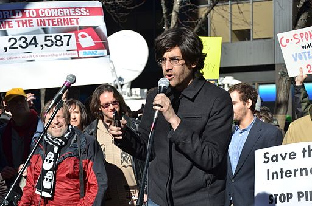

Tanya Jawab Sobat CCID 30 Juni 2016
Pada facebook Creative Commons Indonesia, Edo W Adithyawarman bertanya mengenai lisensi Creative Commons:
“Halo, saya Edo, mau tanya… Sejak tanggal 25 Juni kemarin, saya mulai menerjemahkan tulisan-tulisan Aaron Swartz dari blognya yg berlisensi CC BY-NC-SA. Saya terjemahkan tulisan-tulisan itu di kanal publikasi daring http://medium.com/aaron-swartz-id dan membuka ruang itu seluas-luasnya untuk kontributor. Pertanyaannya, apa yangg saya lakukan ini tidak bermasalah? Apa kira-kira yang perlu saya perhatikan? Lalu, apakah produk terjemahan itu mesti menggunakan lisensi yg sama dengan artikel yang diterjemahkan (CC BY-NC-SA)? Ditunggu bantuannya. Terimakasih banyak”
Lisensi CC yang digunakan oleh Aaron Swartz atau pemegang hak ciptanya atau orang yang mengelola naskah-naskah buatan Aaron di situs web tersebut, secara langsung mengizinkan Anda untuk menggunakan ciptaan-ciptaan yang ada di situs web tersebut, selama penggunaan Anda sesuai dengan ketentuan lisensi CC BY-NC-SA:

{kind=link}
Anda diperbolehkan untuk menyalin dan menyebarluaskan kembali naskah buatan Aaron dalam bentuk atau format apapun, juga mengubah, menggubah, dan membuat ciptaan turunan dari naskah tersebut.
-
Anda harus menerapkan Atribusi yang sesuai (mencantumkan nama penulis, mencantumkan tautan kepada sumber tulisan, menyatakan perubahan yang telah Anda lakukan (misalnya: pernyataan bahwa artikel tersebut adalah artikel terjemahan), dan mencantumkan tautan pada lisensi yang digunakan.
Contoh: Artikel ini adalah versi terjemahan dari artikel berjudul “Jefferson: Nature Wants Information to Be Free”, CC BY-NC-SA, oleh Aarton Swartz.
-
Anda tidak dapat menggunakan naskah tersebut untuk kepentingan komersial. (Ketentuan NonKomersial tidak menjelaskan dengan pasti batasan-batasan dari penggunaan untuk kepentingan komersial, sehingga ketentuan ini “mungkin” masih dapat didiskusikan dengan persetujuan pengelola situs web dan naskah-naskah buatan Aaron sekarang, Sean B. Palmer, mengingat situs web tersebut juga mebuat ketentuan “unless otherwise stated”. Keterangan lebih lanjut terkait kelebihan dan kekurangan ketentuan NC dapat dibaca di poin ketujuh artikel berikut
Catatan: Beberapa waktu yang lalu, tindakan dari dua penerbit: Verso Books dan New Press, menuai protes dari para pemerhati Aaron Swartz. Kedua penerbit yang menerbitkan sebuah buku naskah-naskah pilihan dari Aaron ini mempersulit para pengguna untuk mengunduh dan menyebarluaskan buku tersebut. Hal ini kemudian dianggap tidak sesuai dengan semangat berbagi yang diperjuangkan oleh Aaron. Informasi lebih lanjut tentang kasus ini dapat dibaca di tautan ini. Penggunaan ciptaan dari pencipta-pencipta tertentu, harus diikuti dengan memikirkan strategi dan perkiraan terkait dampak penggunaannya, supaya tidak ada pihak yang merasa dirugikan.
-
Apabila Anda melakukan adaptasi terhadap naskah yang ada di situs web tersebut (yang mana, telah Anda lakukan dengan menerjemahkan artikel buatan Aaron Swartz), Anda harus menerapkan lisensi yang sama dengan naskah yang asli yaitu CC BY-NC-SA.
Semoga membantu. Pokoknya Creative Commons!
Tags:
Oleh: Hilman Fathoni
3 Jul 2016Kategori:
Berita Terbaru
- Lokakarya Hak Cipta dan Lisensi Creative Commons di Pekanbaru
- Pengumuman Resmi: Hasil Akhir Training of Trainers Creative Commons Indonesia
- Literatur tentang Model Bisnis Terbuka "Made With CC"
- Data dan Artikel Ilmiah Terbuka dari PLOS!
- Konten Format Model 3 Dimensi Berilsensi CC di Platform Sketchfab